Bilaspur News Hub
2
EDUCATION
3
EVENT
9
GOVERNMENT
2
HEALTH
2
INFRASTRUCTURE
25
INSTAGRAM NEWS
12
NEWS
1
OTHER
12
POLICE
1
RAILWAY
4
SOCIAL
11
YOUTUBE VIDEOS
EDUCATION2

The Hitavada · Scraped: 2026-07-29 08:22:00
Heavy rains flooded a city school, prompting rescue operations using an excavator to save trapped students. No injuries were reported, but the incident highlighted the need for better disaster preparedness in schools.

The Hitavada · Scraped: 2026-07-28 12:00:26
Lokansh's outstanding performance guided SFS HighSchool to a semi-final berth in the district cricket tournament. The victory marks a significant achievement for the school team.
EVENT3

BREAKINGSharmila wins historic gold in para athletics / शर्मा ने पैरा एथलेटिक्स में ऐतिहासिक स्वर्ण जीता
The Hitavada · Scraped: 2026-07-29 08:22:00
Sharmila secured a historic gold medal in para athletics, marking India's triumph on the global stage. Her victory inspires athletes with disabilities and highlights the growing prominence of para sports.

The Hitavada · Scraped: 2026-07-28 12:00:26
During the BSC awards, former athlete Ashok Kumar Dhyanchand motivated local sportspersons to pursue excellence and perseverance. His speech highlighted dedication and the importance of sports development.

The Hitavada · Scraped: 2026-07-28 12:00:26
ARYA secured a bronze medal in the recent Asian championships, marking a historic achievement for the region. The win highlights the athletes' hard work and dedication.
GOVERNMENT9

Lokswar · Published: Tue, 28 Ju | Scraped: 2026-07-28 12:00:26
A Bastar delegation has left for Delhi to present the region’s tribal culture and its evolving image to the President of India. The visit seeks to highlight new developments and cultural heritage.
Lokswar · Published: Tue, 28 Ju | Scraped: 2026-07-28 12:00:26
Collector Sanjay Agarwal directed officials to speed up the Vande Mataram campaign and complete all Agristack registrations per committee targets. The push aims to boost civic participation and digital agriculture records.

CG Wall · Published: Tue, 28 Ju | Scraped: 2026-07-28 17:28:36
An ACB operation caught a government clerk accepting a bribe to secure snake bite compensation, exposing corruption in relief distribution. The incident underscores the need for transparency in compensation processes.

The Hitavada · Scraped: 2026-07-29 08:22:00
NCPI MPs participated in the NDA's inaugural parliamentary party meeting, marking a significant political engagement. The meeting focused on coordination and strategy ahead of upcoming sessions.

The Hitavada · Scraped: 2026-07-29 08:22:00
The Supreme Court prohibited coercive measures against protesters who have no criminal record, safeguarding the right to protest. This ruling ensures that peaceful demonstrations are not unfairly suppressed.
The Hitavada · Scraped: 2026-07-29 08:22:00
The Chief Minister has directed the Home Department to withdraw FIRs filed against protesters during the NEET paper leak agitation, aiming to ease tensions and address concerns over the crackdown on students.
The Hitavada · Scraped: 2026-07-29 08:22:00
The Lok Sabha has started debating the anti-paper leak bill aimed at curbing examination malpractices, seeking stricter penalties for those involved in leaking exam papers.
The Hitavada · Scraped: 2026-07-29 08:22:00
The state government will hold weekly public meetings every Friday for citizens to voice grievances directly. This aims to boost responsiveness and trust between officials and the public.

The Hitavada · Scraped: 2026-07-29 08:22:00
Defence Minister Rajnath Singh said the proposal to create a dedicated Bastar Regiment is being examined. The move aims to enhance regional representation and operational efficiency in the region.
HEALTH2

The Hitavada · Scraped: 2026-07-29 08:22:00
The department conducted inspections at local dairies to ensure compliance with safety standards and collected samples for testing. The move aims to safeguard consumers from adulterated dairy products.
G News Bilaspur · Published: 2026-07-28 | Scraped: 2026-07-28 16:10:39
Rising malaria cases have prompted the health department to conduct a comprehensive house-to-house survey. The initiative aims to identify and treat infections quickly, curbing the spread.
INFRASTRUCTURE2

Lokswar · Published: Tue, 28 Ju | Scraped: 2026-07-28 16:10:39
A mixed fruit garden and palm oil plantation will be established in Devkirari village under Bilha block. MLA Dharmalal performed the ceremonial planting, marking the start of the project.
The Hitavada · Scraped: 2026-07-29 08:22:00
A massive crater has appeared on a newly constructed bridge in Dehradun, causing Rs 16 crore worth damage within 16 days, prompting Congress to highlight the structural failure and demand accountability.
INSTAGRAM NEWS25
The tiger is more than a symbol of strength—it's a guardian of our forests. Protect them today for a better tomorrow. 🌳🐅
#InternationalTigerDay #TigerDay #SaveTigers #WildlifeProtection #ForestConservation taken in Marwahi by @bilaspurdiaries
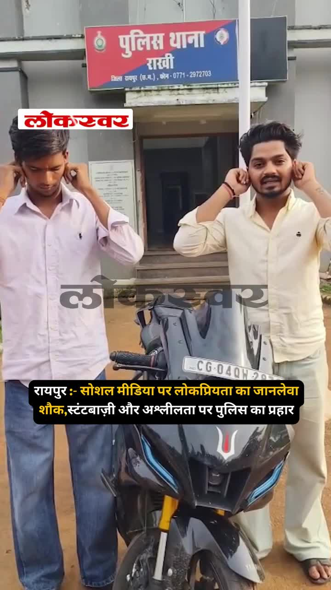
Raipur police have taken action against individuals risking lives through dangerous stunts and posting obscene content for social media popularity. The crackdown aims to curb reckless behavior and protect public safety.
A lawyer in Bilaspur lost ₹47.60 lakhs after being duped by a fraudulent online trading scheme. The scam highlights rising cyber fraud risks and the need for caution in digital investments.
A massive fire broke out at Octopussy Bar in Raipur, quickly spreading to adjacent shops. Fire services responded, but the blaze caused significant damage and raised concerns over safety standards.
The Khutaghat Dam in Bilaspur offers a scenic view, attracting locals and tourists. The post highlights the region's water resources and natural beauty.
A traditional Guru mantra honoring the divine teacher as embodiment of Brahma, Vishnu, and Mahesh. It reflects deep respect for spiritual guidance in Indian culture.
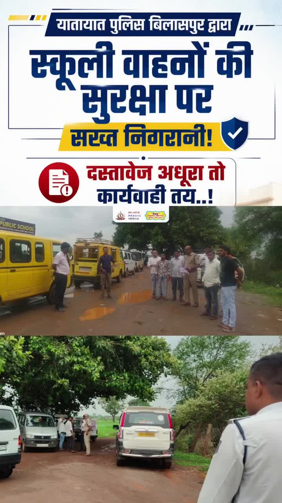
यातायात पुलिस बिलासपुर द्वारा स्कूली वाहनों की सुरक्षा पर सख्त निगरानी, दस्तावेज़ अधूरे तो कार्रवाई तय..🚦🚨
जी.डी. पब्लिक स्कूल, रहंगी में स्कूली वाहनों का निरीक्षण कर दस्तावेज़ों की जांच की गई। जिन वाहनों में दस्तावेज़ों की कमी पाई गई, उनके विरुद्ध ऑनलाइन चालान की कार्रवाई की गई तथा वाहन चालकों को यातायात नियमों के पालन हेतु समझाइश दी गई। by @bilaspurdist
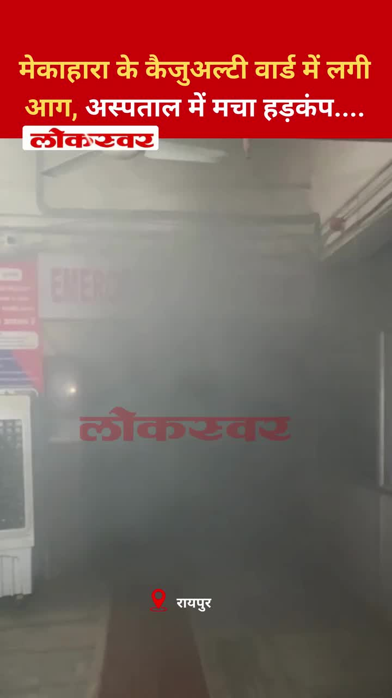
A fire erupted in the casualty ward of Mekahara Hospital, causing panic among patients and staff. Emergency services quickly evacuated the area and controlled the blaze.
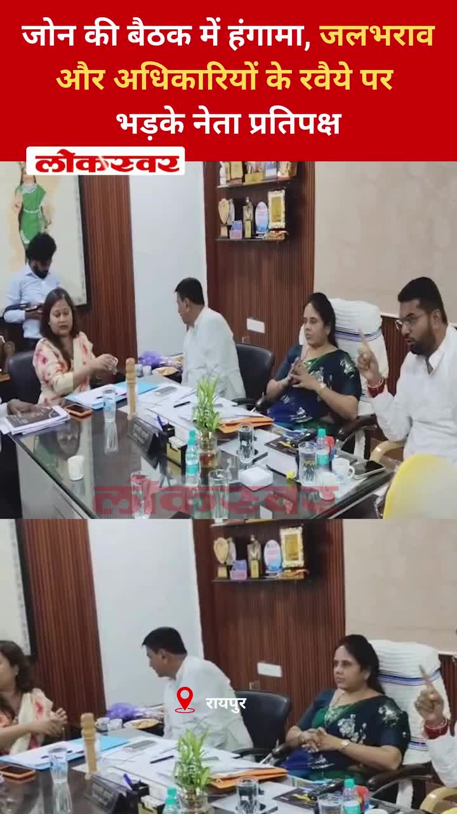
During a zonal meeting, the opposition leader expressed fury over persistent waterlogging and poor official attitudes. The incident highlights ongoing civic infrastructure challenges in Raipur.
एक युवा जोड़े ने राजधानी में इंस्टाग्राम लाइक्स के लिए एक खतरनाक स्टंट किया, जिससे उनकी जान को खतरा पैदा हो गया। यह वीडियो वायरल हो गया है, जो ऑनलाइन प्रसिद्धि के लिए जोखिमों को उजागर करता है।
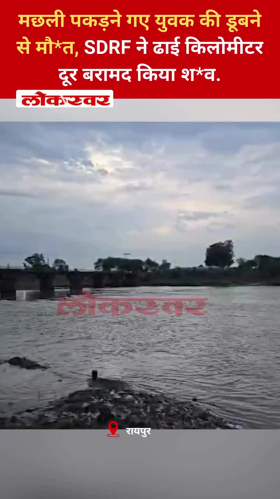
राजधानी में मछली पकड़ने गए एक युवक की डूबने से मौत हो गई। एसडीआरएफ टीम ने दो ढाई किलोमीटर दूर उसका शव बरामद किया, जो नदी में मछली पकड़ने के खतरों को दर्शाता है।

बिलासपुर में सेवा सेतु केंद्रों के माध्यम से सरकारी सेवाएं अधिक सरल, पारदर्शी और समयबद्ध हो रही हैं। यह पहल नागरिकों के लिए पहुंच और लाल फीताशाही को कम करने पर केंद्रित है।
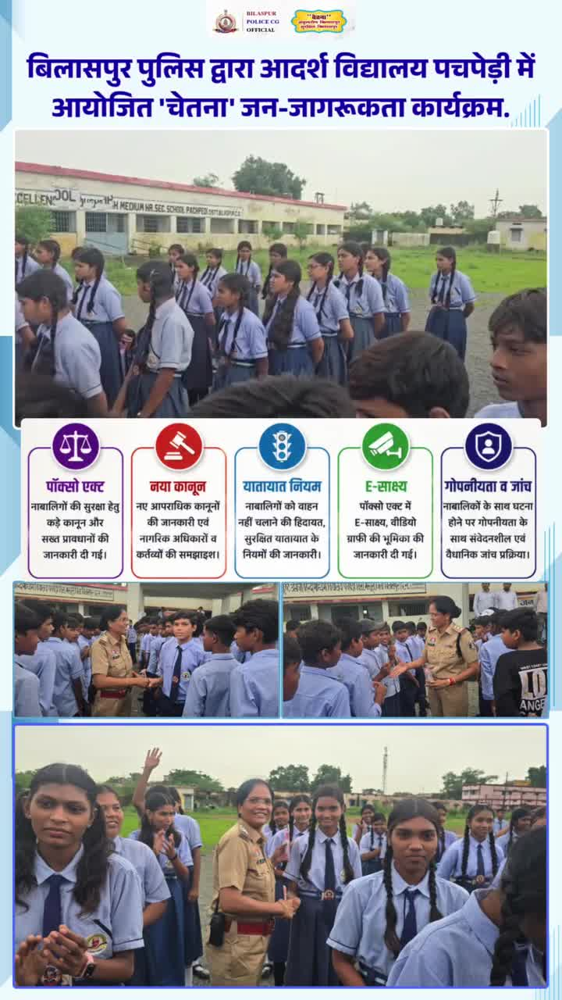
पचपेड़ी के आदर्श विद्यालय में एक जागरूकता कार्यक्रम आयोजित किया गया, जिसमें पॉक्सो अधिनियम, नए कानूनों और यातायात नियमों पर चर्चा की गई। छात्रों को सुरक्षा, कानूनी अधिकारों और जिम्मेदार व्यवहार के बारे में शिक्षित किया गया।
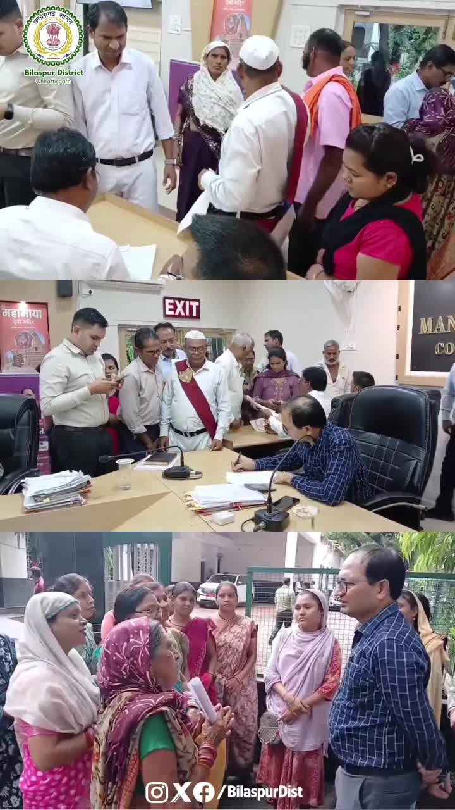
Collector Sanjay Agarwal conducted a Jan Darshan session, listening to grievances from both urban and rural residents. The meeting aimed to address local issues and ensure swift administrative action.
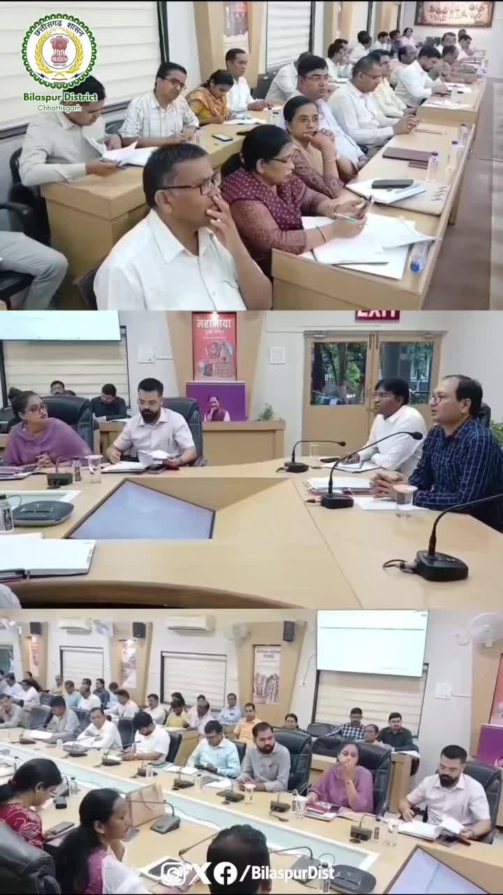
The collector directed officials to finish Vande Mataram campaign preparations in a time‑bound and effective manner. The initiative seeks to promote national awareness across the district.
Gyaneshwari Yadav, a talented athlete from Rajnandgaon, secured a medal at the Commonwealth Games 2026. Her achievement brings pride to her community and highlights regional sporting talent.
The Sendarik Chowk black spot has been sealed to stop frequent accidents, marking a major traffic overhaul. Authorities hope this will improve safety and ease congestion in the area.
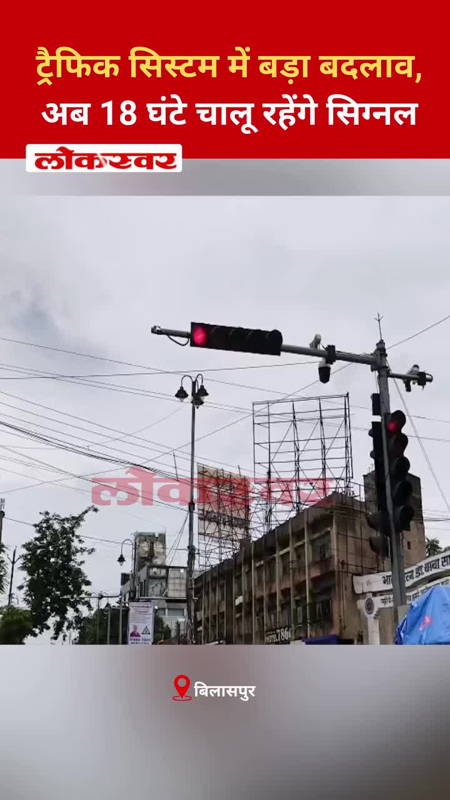
Bilaspur will now operate traffic signals for 18 hours a day to streamline traffic flow and reduce jams. The change aims to make city movement more efficient and predictable.
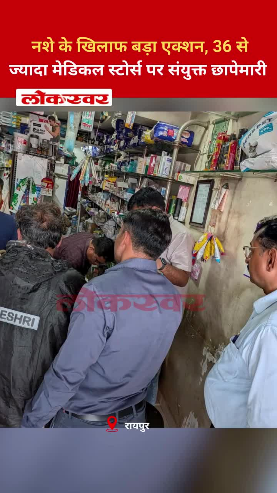
Raipur Police launched a joint raid on over 36 medical stores to curb illegal drug sales. The operation targets the narcotics supply chain and aims to protect public health.
NEWS12

Lokswar · Published: Wed, 29 Ju | Scraped: 2026-07-29 05:03:19
<p>(अजय श्रीवास्तव) : राजधानी रायपुर के तेलीबांधा इलाके में स्थित ऑक्टोपस बार में बुधवार सुबह भीषण आग लगने से इलाके में हड़कंप मच गया। देखते ही देखते आग ने विकराल रूप धारण कर लिया और इसकी लपटें बार के आसपास स्थित दुकानों तक पहुंच गईं, जिससे मौके पर अफरा-तफरी का माहौल बन गया। आग की …</p>
<p>The

Lokswar · Published: Wed, 29 Ju | Scraped: 2026-07-29 05:03:19
<p>(प्रदीप भोई) : कवर्धा। सावन माह की शुरुआत से पहले छत्तीसगढ़ के मुख्यमंत्री विष्णुदेव साय ने कबीरधाम जिले के विश्व प्रसिद्ध भोरमदेव मंदिर में परिवार सहित भगवान भोलेनाथ के दर्शन कर जलाभिषेक किया। पूजा-अर्चना के बाद मुख्यमंत्री ने श्रद्धालुओं के लिए बड़ा ऐलान करते हुए कहा कि सावन के दौरान कांवड़ यात
Lokswar · Published: Wed, 29 Ju | Scraped: 2026-07-29 05:03:19
<p>(भूपेंद्र सिंह राठौर) : छत्तीसगढ़ में मानसून पूरी तरह सक्रिय है और अगले 48 घंटे बेहद अहम माने जा रहे हैं। बंगाल की खाड़ी से बने गहरे अवदाब का असर अब पूरे प्रदेश पर दिखाई दे रहा है। मौसम विभाग ने कई जिलों के लिए ऑरेंज और येलो अलर्ट जारी किया है। विभाग ने चेतावनी …</p>
<p>The post <a href="ht

The Hitavada · Scraped: 2026-07-29 08:22:00
Suniel Anand, son of legendary actor Dev Anand, has passed away, marking a loss to the film industry. He was known for his contributions to cinema and his family's legacy.
The Hitavada · Scraped: 2026-07-29 08:22:00
Nagpur recorded 180 mm of rainfall, prompting orange alerts for several districts, while Chandrapur, Gadchiroli, and Gondia face red alerts today. Authorities have warned residents of potential flooding and advised caution.
The Hitavada · Scraped: 2026-07-29 08:22:00
Heavy monsoon rains hit the city, bringing relief from heat but causing disruption in daily life. Residents are adjusting to flooding and travel delays.
The Hitavada · Scraped: 2026-07-28 12:00:26
The Hitavada · Scraped: 2026-07-28 12:00:26
The Hitavada · Scraped: 2026-07-28 12:00:26

The Hitavada · Scraped: 2026-07-28 12:00:26
G News Bilaspur · Published: 2026-07-28 | Scraped: 2026-07-28 17:28:36
G News Bilaspur aired a special broadcast on 28 July 2026 at 01:00 EVN, covering regional updates. The program highlighted local events and developments. Viewers can expect regular updates from the channel.
OTHER1
G News Bilaspur · Published: 2026-07-28 | Scraped: 2026-07-28 16:10:39
The event 'PRIME' is scheduled for July 28th in Bilaspur. It is expected to cover key local developments and updates.
POLICE12

Lokswar · Published: Wed, 29 Ju | Scraped: 2026-07-29 08:22:00
Police at Bilaspur’s Khootaghat weir arrested stunt performers who endangered lives filming reels, holding them by their ears as a warning.
Lokswar · Published: Wed, 29 Ju | Scraped: 2026-07-29 08:22:00
A paper gang in Bilaspur division switched to stealing from trains by hiding theft in ghunghats; six members were arrested while the mastermind remains at large.
BREAKINGTraffic signals to run 18 hours daily in Bilaspur / बिलासपुर में अब 18 घंटे चालू रहेंगे सिग्नल
Lokswar · Published: Tue, 28 Ju | Scraped: 2026-07-28 12:00:26
Bilaspur traffic police will keep signal lights on for 18 hours daily to boost road safety and cut accidents. The move aims to smooth traffic flow across the city.

Lokswar · Published: Tue, 28 Ju | Scraped: 2026-07-28 13:32:29
An unidentified corpse was discovered in the Kharun river at Mahadev Ghat, causing panic among locals. Police have launched an investigation to identify the victim and determine the cause of death.
Lokswar · Published: Tue, 28 Ju | Scraped: 2026-07-28 13:32:29
Commissionerate police and health officials inspected more than three dozen medical stores across Raipur to curb illegal drug sales. The crackdown aims to prevent substance abuse and enforce regulations.
Lokswar · Published: Tue, 28 Ju | Scraped: 2026-07-28 16:10:39
In Bilaspur, a controversial snake bite incident led to the arrest of three clerks. The clerical union now alleges foul play and has raised concerns over the police's handling of the case.

CG Wall · Published: Tue, 28 Ju | Scraped: 2026-07-28 17:28:36
Two criminals lured a young man with a false lift offer, then attacked him with stones in a secluded area and stole his bike. Sarkanda police have arrested the culprits, highlighting the need for vigilance against such crimes.

CG Wall · Published: Tue, 28 Ju | Scraped: 2026-07-28 17:28:36
A man with a twisted mindset was arrested after 20 days for assaulting a young girl, showing that daughters are unsafe even behind their homes. The case highlights growing perversion in society and the need for swift justice.
BREAKING16 Maoists surrender to Jharkhand Police / झारखंड पुलिस के सामने 16 माओवादियों ने आत्मसमर्पण किया
The Hitavada · Scraped: 2026-07-29 08:22:00
Sixteen Maoists surrendered before Jharkhand Police, reflecting ongoing efforts to reduce Naxal insurgency in the region. The development is seen as a significant law‑and‑order victory.

The Hitavada · Scraped: 2026-07-29 08:22:00
Police in Gorakhpur have seized 71 bottles of illegal English liquor during a crackdown. The operation aims to curb illicit liquor trade and protect public health.
The Hitavada · Scraped: 2026-07-28 12:00:26
A property dispute escalated into a fatal clash, resulting in the murder of a cousin in Bilaspur. Police have registered a case and are investigating the motives behind the violence.
G News Bilaspur · Published: 2026-07-28 | Scraped: 2026-07-28 16:10:39
The traffic police in Bilaspur have announced new measures to curb the rising number of road accidents. The decision aims to improve safety and reduce fatalities on the city's roads.
RAILWAY1

Nai Dunia Bilaspur · Published: Wed, 29 Ju | Scraped: 2026-07-29 08:22:00
The Bilaspur railway station will soon provide high‑tech services including electric vehicle charging and car washing facilities in its parking area, improving commuter convenience.
YOUTUBE VIDEOS11
Police uncovered a gang using towels to steal from train passengers in Bilaspur. The members were arrested during routine checks, and the crackdown aims to improve commuter safety.
A man accused of molesting a minor girl in Bilaspur has been arrested by police. The case sparked public outrage and prompted swift action. Authorities stressed protecting children and vowed to pursue justice.


The final news bulletin for Bilaspur on the morning of 29 July 2026 provides latest updates. It covers key developments across the city. Residents are advised to stay tuned for further details.
The Ram Bhikhu Dharmarth Seva Samiti organized a grand Guru Puja Mahotsav on Guru Purnima in Bilaspur. The event featured rituals, cultural programs, and community service initiatives. Many locals joined the festive celebrations.
Two men pretending to need a lift in Bilaspur robbed the driver after gaining his trust. The incident highlighted the dangers of hitchhiking and led to arrests. Police advise caution when offering rides.


This is a routine evening final news bulletin from Grand News Bilaspur covering updates as of 28 July 2026.
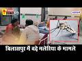
Recent data shows a notable increase in malaria cases in Bilaspur, prompting health officials to step up prevention measures.
Severe allegations have been levelled at Sarkanda Girls School, raising concerns over student safety and institutional conduct.
The article emphasizes that mental strength is the foundation of effective disaster management, enabling communities to cope and recover. It highlights initiatives and awareness campaigns in Bilaspur to build resilience.
Bilaspur will now have traffic signals functioning for 18 hours a day to improve traffic flow and reduce congestion. The move aims to enhance road efficiency and commuter safety across the city.
Bilaspur prepares to accelerate development works / बिलासपुर में विकास कार्यों को गति देने की तैयारी
The administration in Bilaspur is gearing up to speed up ongoing development projects, focusing on infrastructure and public services. This initiative aims to boost economic growth and improve civic amenities for residents. Officials have announced a roadmap to ensure timely completion of key schemes.
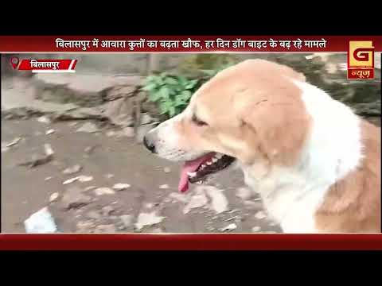